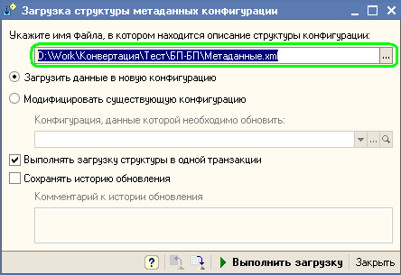
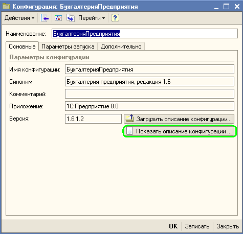

Итак, для создания правил обмена данными нам нужна информация о структуре информационных баз участвующих в обмене. Если мы будем знать структуру информационных баз, то сможем задать какие объекты информационной базы источника должны преобразовываться в объекты информационной базы приемника. То есть по сути, сможем настроить правила обмена данными между двумя информационными базами.
У нас имеется информационная база по которой нам нужно получить информацию о ее структуре. Выгрузим информацию о структуре информационной базы в файл. Для этого используется внешняя обработка MD81Exp.epf и MD80Exp.epf для конфигураций на платформе "1С:Предприятии 8.1" и "1С:Предприятии 8.0" а так же MD77Exp.ert для конфигураций на платформе "1С:Предприятии 7.7". Эти обработки входят в комплект дистрибутива конфигурации "Конвертация данных 2.0".
Для подготовки XML-файла содержащего описание структуры метаданных конфигурации нужно запустить внешнюю обработку соответствующую версии платформы , указать путь для файла, в который необходимо выгрузить информацию о структуре информационной базы и нажать кнопку "Выгрузить".
Если наша информационная база работает на базе платформы 1С:Предприятие 8.1, то процесс выгрузки информации о структуре информационной базы будет выглядеть следующим образом:
1. Открытие информационной базы, информацию о структуре метаданных которой необходимо получить (одинаков для всех платформ)
2. Открытие внешней обработки MD81Exp.epf. Для этого достаточно в главном меню открыть пункт "Файл\Открыть" и указать путь по которому располагается обработка MD81Exp.epf (для платформы 7.7 и 8.0 нужно открывать обработки MD77Exp.ert соответственно MD80Exp.epf).
3. Указание имени файла, в который необходимо сохранить информацию о структуре информационной базы
4. Нажатие на кнопку Выполнить

Эти действия позволили нам выгрузить информацию структуре информационной базы.
Осталось только загрузить данную информацию в программу и можно будет приступить к настройке правил обмена данными.
Когда файл с информацией о структуре метаданных готов, его можно загрузить в конфигурацию "Конвертация данных".
Для этого достаточно открыть "Панель функций" и выбрать пункт "Загрузить структуру метаданных конфигурации".

После чего откроется форма в которой необходимо указать путь к файлу, в котором хранится информация о структуре информационной базы.

Имеется возможность загрузить данные о структуре конфигурации в новый элемент, либо модифицировать уже загруженную структуру метаданных информационной базы.
После нажатия на кнопку "Выполнить загрузку" программа загрузит информацию о структуре информационной базы (Процесс загрузки информации о структуре метаданных информационной базы может потребовать некоторого времени. О ходе загрузки данных программа будет Вас информировать сообщая количество загруженных объектов, их свойств и предопределенных значений).
После окончания загрузки программа откроет информацию о загруженных данных. При этом будет создан новый элемент справочника "Конфигурации". Этот элемент справочника в дальнейшем будет соответствовать информации о выгруженной конфигурации.

В справочнике "Конфигурации" хранится информация о информационной базе из которой были выгружены данные. Имеется возможность посмотреть информацию о структуре информационной базы.

В верхней части формы в виде дерева представлена структура метаданных. В табличной части на закладке "Свойства" показаны реквизиты, табличные части объектов метаданных. Для документов дополнительно показана структура записей регистров, движения по которым делает соответствующий документ.
Если информация о структуре метаданных информационной базы источника и приемника загружена полностью, то все готово для создания правил обмена данными.
Следующий раздел: «Создание правил обмена данными (конвертации)»